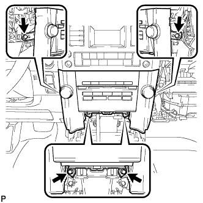
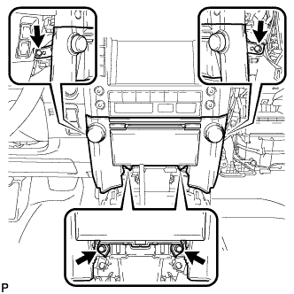

AIR CONDITIONING PANEL > REMOVAL |
| 1. REMOVE NO. 1 INSTRUMENT PANEL FINISH CUSHION |
 |
Put protective tape around the No. 1 instrument panel finish cushion.
| *1 | Protective Tape |
Using a moulding remover, detach the 4 clips.
Disconnect the connector and remove the No. 1 instrument panel finish cushion.
| 2. REMOVE CENTER INSTRUMENT CLUSTER FINISH PANEL GARNISH |
 |
Detach the 13 clips and remove the center instrument cluster finish panel garnish together with the instrument cluster finish panel garnish.
| *1 | Center Instrument Cluster Finish Panel Garnish |
| *2 | Instrument Cluster Finish Panel Garnish |
| 3. REMOVE NO. 2 INSTRUMENT PANEL REGISTER ASSEMBLY |
 |
Detach the 8 clips and remove the No. 2 instrument panel register.
| 4. REMOVE SHIFT LEVER KNOB SUB-ASSEMBLY |
 |
Twist the shift lever knob in the direction indicated by the arrow and remove it.
| 5. REMOVE UPPER CONSOLE PANEL SUB-ASSEMBLY |
 |
Put protective tape around the upper console panel.
| *1 | Protective Tape |
 |
Using a moulding remover, detach the 7 clips.
Disconnect each connector and move the upper console panel in the direction of the arrow to remove it.
| 6. REMOVE FRONT UPPER CONSOLE PANEL GARNISH |
 |
Detach the 2 clips and remove the front upper console panel garnish.
| 7. REMOVE RADIO RECEIVER ASSEMBLY WITH BRACKET |
w/o Navigation System:
|  |
Remove the 4 bolts.
 |
Pull the radio receiver to detach the 6 clips and rib on the backside of the radio receiver.
Disconnect the connectors and remove the radio receiver.
w/ Navigation System:
|  |
Remove the 4 bolts.
 |
Pull the radio receiver to detach the 6 clips and 3 ribs on the backside of the radio receiver.
Disconnect the connectors and remove the radio receiver.
| 8. REMOVE AIR CONDITIONING CONTROL ASSEMBLY (w/o Navigation System) |
 |
Remove the 2 bolts.
Detach the 7 clips.
Disconnect the connectors and remove the air conditioning control assembly.
| 9. REMOVE DISPLAY AND NAVIGATION MODULE DISPLAY (w/ Navigation System) |
 |
Remove the 4 bolts.
 |
Pull the display and navigation module display to detach the 7 clips on the backside of the display and navigation module display.
Disconnect the connectors and remove the display and navigation module display.